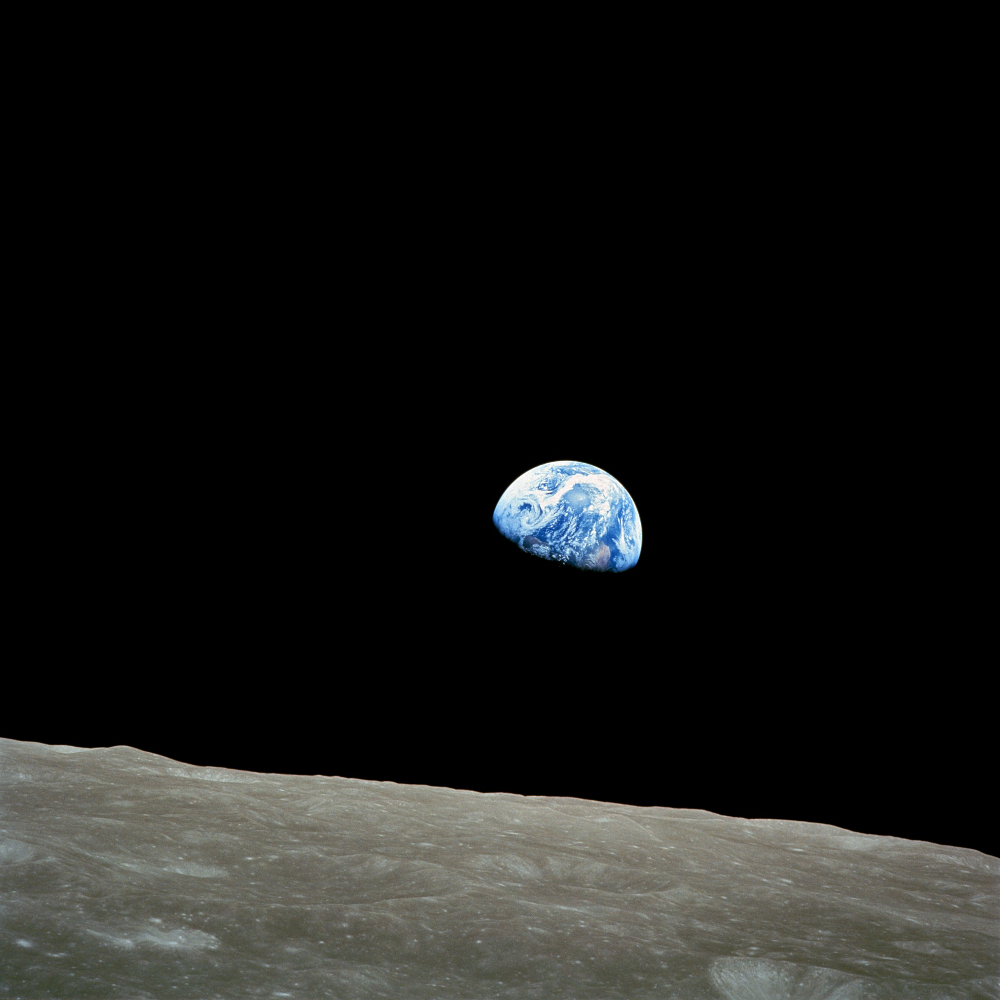

You are cordially invited to attend
the departure of the
United States Spaceship Apollo VIII
on its voyage around the moon,
departing from Launch Complex 39A, Kennedy Space Center,
with the launch window commencing at
seven a.m. on December 21, 1968
r.s.v.p. The Apollo VIII Crew
Invitations had been issued to watch departures before, but not for a trip like this one. For the first time, man would ride atop a Saturn V launch vehicle. And before he returned to the earth, he would travel in a region where the gravitational pull of another celestial body was stronger than that of his home planet - a first in history that would endure no matter where mankind might go in the future.
As soon as Borman's crew learned, on 10 August, that it might fly a lunar mission, the men began to train for the moon flight. On 9 September, sessions on the Cape simulator began. Six weeks before launch, these turned into day-after-day, ten-hour work periods. With the help of the support team - Mattingly, Carr, and Brand, who followed the hardware, coordinated the preparation of checklists, and worked out spacecraft stowage - the crew was ready on time. Shortly after 2:30 on the morning of 21 December, Borman, Lovell, and Anders rose and dressed for the launch day breakfast with, among others, George Low, the man who had hatched this scheme to send them into lunar orbit on Apollo's second manned flight.50
Many guests were in Florida for the send-off, thousands more than the crew had formally invited. In the chilly predawn, the visitors clogged the roads, their headlights flashing, searching for the best vantage points. Busloads of newsmen trundled through the gates, heading for the press area, and helicopter-borne groups of VIPs landed near the special viewing stand. All attention focused on Apollo 8, bathed in the glare of spotlights that made it visible for many kilometers. Radio announcers, television commentators, and public address spokesmen told millions around the world and the thousands in the Cape area that soon three astronauts would leave this globe to visit another. At 7:51, Borman, Lovell, and Anders, lying in their couches 100 meters above the launch pad, started on that journey.51
Three top Manned Spacecraft Center officials - Christopher Kraft, Robert Gilruth, and George Trimble (left to right) - wait to hear that the spacecraft has been launched.
Riding the huge Saturn V, propelled by more power than man had ever felt pushing him before (33.4 million newtons, or 7.5 million pounds of thrust), the crew had varied impressions. Borman thought it was a lot like riding the Gemini Titan II. Lovell agreed but added that it seemed to slow down after it left the pad. Rookie astronaut Anders likened it to "an old freight train going down a bad track." The S-IC stage shook the crew up, but not intolerably. Despite all the power, the acceleration reached only four g. At engine cutoff, it dropped to one g. During S-II stage acceleration, pogo stayed within allowable limits and caused no pain to the pilots. They were glad, however, when the engines cut off and the second stage fell away. A dozen minutes after launch, the S-IVB third stage had already fired to drive itself and the spacecraft into earth-orbital flight. Borman, Lovell, Anders, and the flight controllers checked the spacecraft and third stage systems for a revolution and a half, in preparation for the next step in the mission. At 10:17, former crew member Collins - back from his bout with the bone spur and now at the capcom's console rather than in the center couch of Apollo 8 - opened a new era in space flight when he said, "All right, you are go for TLI [translunar injection]." Many watchers in Hawaii, who had seen a launch on live television for the first time, raced outside and looked for the fireworks high above them.52
For five minutes, the S-IVB fired, increasing its speed from 7,600 to 10,800 meters per second. Borman, Lovell, and Anders now traveled at a greater speed than any human being ever had, shooting outward fast enough to escape the earth's gravitational influence. Asked later about impressions at translunar injection, Borman replied:
Psychologically it was a far easier flight than Gemini 7. You adopt a philosophical approach after you burn TLI, and I wasn't really concerned about anything. When you are in earth orbit you are always aware that if something happens you have to react quickly to get down. Once you burn TLI, . . . you really are not concerned with reacting swiftly because it is going to take you [at least] two or three days to get home anyway.
The command and service modules separated from the S-IVB and flipped around so the crew could photograph the adapter, where the lunar module would be housed on future voyages. Borman commented that formation flying was no more difficult with the S-IVB than it had been with the Gemini Agena and that docking with the LM should pose no problems. Since they had no lander on this mission, they chose not to get too close to the S-IVB. The crew used the small reaction control engines on the service module to begin a separation maneuver with a velocity change of less than a meter per second. But Borman soon noted that the S-IVB was getting closer, instead of moving away. Both the crew and the flight controllers were puzzled. Communications crackled back and forth. Kraft and Bill Tindall talked with Carl R. Huss, who was manning the mission planning and analysis desk in the flight support area, demanding to know what to do. Huss held them off until his group had time to figure out that the crew had not made its maneuver exactly as it should. Studying the relative positions of the two vehicles, Huss soon gave the controllers new information to radio to the space ship. The crew fired the small engines again - this time for a change of two meters per second, changing the trajectory and moving away from the too - friendly third stage.53
Early in the flight, the crew was captivated by the view of the earth from space, especially the detail revealed at a single glance. Borman commented, "We see the earth now, almost as a disk." Then he asked Collins to "tell Conrad he lost his record." Conrad and Gordon had been the highflight champions of Gemini. Lovell, looking through the center window, began to call out place names as if he were an announcer in a railway terminal: Florida, Cuba, Gibraltar, Africa (East and West), Central America, and South America. Borman suggested that Collins warn "the people in Tierra del Fuego to put on their rain coats; looks like a storm . . . out there."54
A safe distance away from the S-IVB, the three crewmen left their couches to take off their pressure suits and met with a surprise - motion sickness. Rapid body movements brought on nausea. Borman suffered the most. There had been a rash of gastroenteritis cases at the Cape just before launch. This "24-hour intestinal flu" might have caused Borman's illness, but there was another possibility. Because it had taken longer to get away from the S-IVB than had been planned, he was late getting to his rest period. To make sure he went to sleep quickly, he had taken a Seconal tablet. During preflight testing of the medical supplies Borman had a slight reaction to this sleep-inducing pill, so he blamed the medication for at least part of his distress. When he awakened, after very fitful rest, Borman retched and vomited twice and had a loose bowel movement. The waste management system worked, but just barely. The crew reported their problems to the flight surgeon and, as Collins said later in Carrying the Fire, "the first humans to leave the cradle had called for their paediatrician." Next day, however, Borman happily told flight control, "Nobody is sick."55
For the first six hours of flight, the round hatch window through which Lovell watched the earth receding had been clear. Then it had clouded over until it was almost useless. The clouding was caused, as it had been during Schirra's flight, by a gas from the silicone oils used in a sealant compound. The two side windows also fogged over, but to a smaller degree. Only the rendezvous windows remained clear throughout the mission. On one occasion crew members complained that pictures of the sun taken through the side windows would be of little value, and they could not even see the sun through the rendezvous windows. They could not see the moon through any of the windows. Navigator Lovell later recalled that
we never really saw the moon. It was a crescent moon, and most of it was dark. I saw it several times in the optics as I was doing some sightings. By and large the body that we were rendezvousing with, that was coming from one direction as we were going to another, we never saw. And we took it on faith that the moon would be there, which says quite a bit for Ground Control.56
At a distance of 223,000 kilometers from the earth, 31 hours after leaving home and 40 before reaching the moon, the crew put on its first television show. Scenes showed the inside of the craft, with Borman as director and narrator, Lovell as actor (preparing a meal , and all three crewmen as Cameramen. Anders installed a telephoto lens to get a better view of the earth, but the lens did not work. When the crew switched back to the interior lens, the earth looked like a white blob. Lovell pointed out that the earth was very bright and they were using a low-level lens. Borman added that the camera was pointing through a hazy window. He was disappointed that they could not show their viewers the "beautiful, beautiful view, with [a predominantly] blue background and just huge covers of white clouds."57
A hundred thousand kilometers farther out and a day later, the crew again unstowed the television camera. This time the telephoto lens worked better. Lovell described what the audience was seeing: the Western Hemisphere was clearly in view and again he called out names - the North Pole, South America all the way down to Cape Horn, Baja California, and the southwestern part of the United States. Once, in a thoughtful vein, he turned to his commander:
Frank, what I keep imagining is if I am some lonely traveler from another planet what I would think about the earth at this altitude, whether I think it would be inhabited or not. . . . I was just curious if I would land on the blue or brown part of the earth.
Anders interjected, "You better hope that we land on the blue part."58
Following the second video presentation, the crew neared a new stage in manned space flight - travel to a place where the pull of earth's gravity was less than that of another body. At 3:29 in the afternoon on Monday, 23 December, that historic crossing was made. At that point, the spacecraft was 326,400 kilometers from the earth and 62,600 from the moon, and its velocity had slowed to 1,218 meters per second. Gradually, as the ship moved farther into the moon's gravitational field, it picked up speed.59
Now the crew prepared for another event - again denoted by one of the abbreviations with which space flight jargon abounds, LOI (lunar-orbit insertion). Since the craft was on a free-return trajectory - a path shaped like a figure eight that would loop the ship around the back of the moon and return it to the earth - Borman wanted "a perfect spacecraft before we can consider the LOI burn." He would hate to leave that good trajectory and then find out that something was wrong. So far, the big service module engine had worked perfectly every time, but the path to the moon had been so precise that only two of four planned midcourse firings had been necessary. Ground control assured him that everything was in order. At 68 hours 4 minutes into the mission Carr, at the console, told the crew, "You are go for LOI." He also informed the astronauts that the closest point of their approach should be 119 kilometers above the moon. Minutes before this transmission, when Borman commented that they still had not seen the moon, Carr asked what they could see. Anders replied, "Nothing. It's like being on the inside of a submarine."60
During Mercury, Gemini, and Apollo orbital missions, there had been periods of communications silence, especially in the southern hemisphere, because the worldwide tracking network did not cover all areas. Up till now Borman and his crew had been in continuous contact during the translunar voyage, but no communications would be possible when the spacecraft went behind the moon. Just before loss of signal in the early hours of 24 December (at 4:49), Carr wished them a safe journey, and Lovell answered, "We'll see you on the other side." Eleven minutes later, traveling at 2,600 meters per second with their heads down so they could watch the lunar landscape, they fired the service module engine for four minutes to reduce their speed by 915 meters per second and get into an orbit approximately 111 by 312 kilometers. Although the engine performed flawlessly, Lovell called it the "longest four minutes I ever spent." While the engine was firing, Lovell and Anders exclaimed about their fantastic view of the moon. Anders added that he had trouble telling the holes from the bumps. Borman called them back to watch their dials.61

Earthrise on the lunar horizon greets the Apollo 8 crew coming from behind the moon after lunar orbit insertion.
Borman, Lovell, and Anders knew that the engine had fired successfully, but nearly a billion persons in 64 countries (according to TV Guide) did not. If the spacecraft had not gone into orbit, it would come back into communications range 10 minutes earlier than planned. After what seemed an interminable wait, Paul Haney, on the public information console in flight control, gleefully announced, "We got it! We've got it! Apollo 8 now in lunar orbit."62
After 15 minutes of describing the first engine firing and getting numbers for the second firing (to circularize the orbit at 112 kilometers above the lunar surface), the crew members told their fellow men what the moon looked like at this close range. Lovell said:
Okay, Houston, The moon is essentially gray, no color; looks like plaster of Paris or sort of a grayish deep sand. We can see quite a bit of detail. The Sea of Fertility doesn't stand out as well here as it does back on earth. There's not as much contrast between that and the surrounding craters. The craters are all rounded off. There's quite a few of them; some of them are newer. Many of them . . . - especially the round ones - look like hits by meteorites or projectiles of some sort.
(Later, during the technical debriefings, Lovell added that
the Lunar Orbiter photographs which we had on board were quite adequate. There was no problem at all in determining objects particularly on the near side of the moon. There are suitable landing-sites. They are very easily distinguished. We could pick them up. We could work our way in. . . . The Lunar Orbiter photos again were helpful . . . to check the craters on the back side.)
After looking at the back of the moon on several orbits, Anders was moved to comment:
It certainly looks like we're picking the more interesting places on the moon to land in. The backside looks like a sand pile my kids have been playing in for a long time. It's all beat up, no definition. Just a lot of bumps and holes.63
As Apollo 8 whirled around the moon on its ten two-hour circuits, the spacecraft location display seemed odd at first to those watching the map in mission control. In earth orbit, spacecraft had always gone from left to right on the display panels; on the lunar charts, however, this vehicle moved from right to left. And while it traveled the crew continued to talk about the view. Anders expressed the general opinion that the moon was an "unappetizing looking place"; nevertheless, it did have a kind of stark beauty. Astronauts commented on the hues of light and dark caused by earthshine and sunshine. They gave temporary names to some of the craters: names like (Harrison) Schmitt, (George) Low, (Robert) Gilruth, (Joseph) Shea, (Theodore) Freeman, (Gus) Grissom, (Ed) White, (James) Webb, (Thomas) Paine, (Elliot) See, (Alan) Shepard, (Donald) Slayton, (Samuel) Phillips, (Christopher) Kraft, (Roger) Chaffee, (Charles) Bassett, and (Gerald) Carr. Once, when flight controller John W. Aaron was the only one to notice in the general excitement that the environmental system needed an adjustment, Crater Aaron was named on the spot.64
The crew caught a nearly circular moon in the photo above. The edge of the Sea of Tranquility is on the left, southwest of and close to the circular Sea of Crisis (Mare Crisium).
NASA had been asked by some to postpone the December lunar-orbiting mission, lest some accident mar Christmas celebrations on earth. But now, as Apollo 8 circled the moon this Christmas Eve, there was additional rejoicing. Early in December, Borman and a friend had selected a prayer for the occasion. During the third lunar revolution, Borman asked, "Is Rod Rose there? I have a message for him," and sent the following transmission:
To Rod Rose and the people of St. Christopher's, actually to people everywhere -Give us, O God, the vision which can see thy love in the world in spite of human failure.
Give us the faith to trust thy goodness in spite of our ignorance and weakness.
Give us the knowledge that we may continue to pray with understanding hearts.
And show us what each one of us can do to set forward the coming of the day of universal peace. Amen.
The crew members had consulted other friends about a possible theme for their mission, something to signify one world, something to tell everyone on earth. One suggestion was that they read the story of the Creation in the first 10 verses of the Book of Genesis in the Bible. This they did, during the ninth revolution, closing with "Good night, good luck, a Merry Christmas and God bless all of you - all of you on the good earth."65
Borman later admitted that he and his crew had not really wanted to carry a television camera; fortunately the decision had not been left to them. Television from the moon had a wide audience. During the flight the crew was told that its shows were being seen all over Europe, even in Moscow and East Berlin; in Japan; in North, Central, and South America; and perhaps in Africa. Lovell, using his optical devices to get a better look, described what was being photographed. Anders raced from window to window for the best vantage points for photographing the lunar surface, especially the areas being considered for landing sites. By the seventh revolution, both of them were so tired that Borman put a stop to the observations. Soon, he knew, they had to start thinking about transearth injection (TEI, another of those important abbreviations) - entrance on the path for homes.66
Borman, Lovell, and Anders were the first men to see the back of the moon (left). Among prominent features are Mare Smythii, Mare Crisium, Mare Fecunditatis, Mare Nectaris, Crater Langrenus, and several rayed craters.
Astronauts Gerald Carr, Donald Slayton, Neil Armstrong (seated left to right), and Harrison Schmitt and Edwin Aldrin (standing) compare mosaics of Lunar Orbiter photographs with scenes televised from the moon to Mission Control by Apollo 8 crewmen.
On the tenth lap of the moon, on Christmas morning, 3 days, 17 hours, and 17 seconds after earth launch, the service module engine fired to increase their speed by 1,070 meters per second. Rounding the corner from the back of the moon, Lovell told Mattingly, who had taken over as CapCom for that shift, "Please be informed there is a Santa Claus." In mission control, the holiday became a truly festive occasion. A Christmas tree was placed below the flight status board, which again showed an earth map with red and green lights, the traditional colors of the season. Schmitt, who had coached the crew for its geological observations, read a parody on Clement C. Moore's poem, "T'was the Night before Christmas."67
After leaving the moon, the crew was worn out. The astronauts rested, letting "Isaac Newton" do most of the driving. Following their naps, CapCom Carr gave them the latest earth news, with emphasis on the impact their voyage had made on the world.68 On the whole, Apollo 8's explorations in December 1968 were acclaimed enthusiastically by the multitudes who looked at their world for the first time from thousands of kilometers in space and at their moon from slightly more than a hundred.
The trip back to the earth was uneventful. During the entire trip, CSM-103 registered only such expected irregularities as fogging windows, puddling water, and clattering cabin fans. Now the space-weary travelers could rest, eat, sleep, show television, and enjoy the ride home. Lovell continued his navigational sightings, and flight control did the tracking. Neither could find more than a minor error in the course hours before the scheduled splashdown in the Pacific; one correction (of less than two meters per second) was made. Early Saturday morning, 14,500 kilometers above the earth, the crew fired the pyrotechnics to separate the command module from the service module, which had worked perfectly whenever it was needed. Fifteen minutes later, the spacecraft crossed into the fringes of the atmosphere, 120 kilometers above the earth. Borman told Mattingly they had a real fireball but were in good shape. Spacecraft speed increased to 9,700 meters per second, subjecting the crew to a load of nearly seven g.
The craft flew an entry curve to a point over northeast China, slanted to the southeast, and landed on target in the mid-Pacific. So accurate was the landing that it worried one of the chief mission planners and data watchers in Houston. Bill Tindall wrote to Jerome B. Hammack, head of the Landing and Recovery Division:
Jerry, I've done a lot of joking about the spacecraft hitting the aircraft carrier, but the more I think about it the less I feel it is a joke. There are reports that the C Prime command module came down right over the aircraft carrier [stationed at 165 degrees 02.1' west longitude and 8 degrees 09.3' north latitude] and drifted on its chutes to land [at 165degrees 1.02' west and 8 degrees 07.5' north, only 4,572 meters] away. This really strikes me as being too close. . . . The consequence of the spacecraft hitting the carrier is truly catastrophic. . . . I seriously recommend relocating the recovery force at least [8 to 16 kilometers] from the target point.
The craft came down in darkness on Friday, 27 December (6 days, 3 hours, and 42 seconds after launch), flipping over on its nose as it landed. Until Borman punched the button that inflated the air bags to upright the spacecraft, its flashing light beacon was lost to the sight of the recovery helicopters. Mission ground rules required a daylight recovery, so Borman and his crew waited 45 minutes for the swimmers to open the hatches. A few minutes later, the helicopter deposited the crew on the deck of the U.S.S. Yorktown for the last lap of - in Borman's words - "a most fantastic voyage."69
Three jubilant astronauts - Lovell, Borman, and Anders (left to right) - back on the earth after their Apollo 8 mission, tell what they saw.
Nineteen hundred and sixty-eight was a banner year for the United States space program, and the celebrations for the latest space explorers were enthusiastic. In Washington on 9 January 1969, Borman, Lovell, and Anders visited the White House, where President Johnson presented them with NASA's Distinguished Service Medal. Then their motorcade passed through cheering crowds on its way to Capitol Hill, where a joint session of Congress and the Supreme Court heard Borman's report. The theme of his talk was that Apollo 8 "was a triumph of all mankind." The three astronauts went to the Department of State auditorium for a press conference, to describe their trip and answer questions from the news media. New York City welcomed them with a ticker-tape parade on the 10th of January, Newark hailed them on the 11th, and Miami greeted them on the 12th during the Super Bowl football game. They returned to Houston on the 13th for a hometown parade. Incoming President Richard M. Nixon sent Borman and his family on an eight-nation goodwill tour of western Europe; they visited London, Paris, Brussels, The Hague, Bonn, Berlin, Rome, Madrid, and Lisbon. Everywhere they went, the moon travelers depicted the earth as a spaceship and stressed international cooperation in space.70
Now, 1969 - the year President Kennedy had set for meeting his challenge - was here. North American's command and service modules had proved that they were ready to achieve that goal. It was time for Grumman's lunar module to be put through some strenuous rehearsals to prepare it for the last - and perhaps the most difficult - 100 kilometers of the 380,000-kilometer voyage.
50. MSC, "Apollo 8 Mission Report," MSC-PA-R-69-1, February 1969, pp. 7-1, 7-15, 13-1; Slayton to NASA Hq., Attn.: Dir. Apollo Prog., "Apollo crew training," 9 Sept. 1968, with encs.; Marion W. Hix, "Crew Station Integration," vol. 4, "Stowage and the Support Team Concept," AER TN S-364 (JSC-07008), review copy, July 1973; MSC, "Apollo 8 Mission Commentary," 21 Dec. 1968, tape 10-1.
51. Charles D. Benson and William Barnaby Faherty, Moonport: A History of Apollo Launch Facilities and Operations, NASA SP-4204, 1978, p. 456; NASA, Twentieth Semiannual Report to Congress, July 1-December 31, 1968 (Washington, 1969), p. 22; NASA, "Project: Apollo 8," press kit, news release 68-208, 6 Dec. 1968, p. 10a; "Most of World to Get Reports On Apollo 8," Washington Post, 20 Dec. 1968; "Cheers Echo 'Round Globe for Apollo," Miami News, 24 Dec. 1968.
52. MSFC, "Saturn AS-503 Evaluation Bulletin No. 1," 27 Dec. 1968; MSC, "Apollo 8 Technical Debriefing," 2 Jan. 1969, pp. 2, 4; "Apollo 8 Mission Report," pp. 6-1, 6-2, 7-16; anon., "Summary Log of Apollo 8," MSC, n.d., p. 1; "Apollo 8 Mission Commentary," 21 Dec. 1968, tapes 16-1, 20-1.
53. "Apollo 8 Log," p. 1; Apollo Program Summary Report, p. 2-31; "Apollo 8 Mission Commentary," 21 Dec. 1968, tapes 26-1, 28-1, 31-1, 33-1, 35-3; MSC, "News Conference on Apollo 8," 9 Jan. 1969, pp. 3-4, 15-16; MSC, "Change of Shift Press Briefing #1," 21 Dec. 1968, tapes 11A-2, 11A-3; "Apollo 7 Mission Report," p. 9-1.
54. MSC, "Apollo 8 Onboard Voice Transcription, As Recorded on the Spacecraft Onboard Recorder (Data Storage Equipment)," January 1969, p. 41; MSC, "Apollo 8 Technical Air-to-Ground Voice Transcription (GOSS Net 1)," December 1968, tape 6-4; "Apollo 8 Mission Commentary," 21 Dec. 1968, tapes 32-1, 32-2, 36-1; "Apollo 8 Log," p. 2.
55. "Apollo 8 Mission Report," pp. 8-3, 8-4; MSC, "Apollo 8 Mission Commentary," 21 Dec. 1968, tapes 98-1, 102-1, 102-2, 102-3, 154-2, 159-1, 161-2; "Apollo 8 News Conference," p. 26; MSC, "Second Post-Recovery Briefing," 27 Dec. 1968, tape 24B-2; "Apollo 8 Debriefing," pp. 114, 117-18; "Apollo 8 Onboard Voice," p. 233; Schneider memo, "Apollo 8 Daily Operations Report No. 1," 23 Dec. 1968; Williard F. Hawkins et al., "Biomedical Evaluation of the Apollo 8 Mission," MSC Internal Note 70-DD-02, December 1970, pp. 2-6, 2-7; Collins, Carrying the Fire, p. 306.
56. MSC, "Apollo 8 Failure and Anomaly Listing," January 1969; p. 2; "Apollo 8 Mission Commentary," 21 Dec., tape 42-1, 23 Dec. 1968, tapes 142-1, 150-1; "Apollo 8 News Conference," p. 5; "Apollo 8 Debriefing," pp. 11, 21, 33; Leger and Bricker, "Window Contamination," pp. 5-6.
57. "Apollo 8 Log," p. 5; "Apollo 8 Voice," tapes 22-6 through 22-13; "Apollo 8 Mission Commentary," 22 Dec. 1968, tapes 104-1 through 104-5.
58. "Apollo 8 Log," pp. 7-8; "Apollo 8 Mission Commentary," 23 Dec. 1968, tapes 166-1 through 166-6; "Apollo 8 Voice," tapes 37-7 through 37-11.
59. "Apollo 8 Log," p. 8; Schneider memo, "Apollo 8 Daily Operations Report No. 2," 24 Dec. 1968; "Apollo 8 Voice," tapes 38-6, 38-7; "Apollo 8 Mission Commentary," 23 Dec. 1968, tapes 117-2, 152-1, 165-1, 167-1, 168-1.
60. "Apollo 8 Mission Report," p. 5-2; "Apollo 8 Mission Commentary," 23 Dec., tape 156-1, 24 Dec. 1968, tapes 202-1, 203-1, 204-1; "Apollo 8 Voice," tapes 38-4, 45-12, 46-1.
61. "Apollo 8 Log," p. 9; "Apollo 8 Voice," tape 46-5; "Apollo 8 Mission Commentary," 23 Dec., tapes 187-1, 191-1, 24 Dec. 1968, tapes 211-1, 211-2, 212-1; "Apollo 8 Mission Report," p. 3-1; "Apollo 8 Debriefing," pp. 31-32; "Apollo 8 Onboard Voice," pp. 73, 74, 76.
62. Ivan D. Ertel and Roland W. Newkirk, with Courtney G. Brooks, The Apollo Spacecraft: A Chronology, vol. 4, January 21, 1966-July 13, 1974, 1978; "Apollo 8 Mission Commentary," 24 Dec. 1968, tapes 214-1, 21-6-1.
63. "Apollo 8 Mission Commentary," 24 Dec. 1968, tapes 218-1, 218-2, 219-1, 257-1; "Apollo 8 Debriefing," p. 34; "Apollo 8 Voice," tapes 46-5 through 47-5, 54-3.
64. "Apollo 8 Mission Commentary," 24 Dec. 1968, tapes 232-1, 232-2, 259-1; "Apollo 8 Debriefing," p. 55; "Apollo 8 Log," p. 15; "Apollo 8 Onboard Voice," pp. 136, 149, 165.
65. "Holiday Orbit a Time to Contemplate," Kansas City Star, 8 Dec. 1968; James E. Clayton, "Moon Trip Adds a Strange New Element to Christmas," Washington Post, 23 Dec. 1968; John J. Simeck postcard to NASA-MSC, n.d.; Low to Simeck, 4 Nov. 1968; Stewart Atkinson to Dir., Natl. Space Agency [sic], 13 Nov. 1968; Gilruth to Atkinson, 2 Dec. 1968; Rose memo for record, "Chronology of Borman Prayer on Apollo 8," 29 Jan. 1969; "Apollo 8 Voice," tapes 50-7, 58-4; "Apollo 8 Mission Commentary," 24 Dec. 1968, tapes 242-3, 277-1; "Apollo 8 News Conference," p. 19.
66. "Apollo 8 News Conference," p. 19; "Apollo 8 Mission Commentary," 24 Dec. 1968, tapes 244-1, 247-1, 247-2, 248-1, 248-2, 264-1; Lee R. Scherer to Dir., Apollo Prog., "Two Color CSM Photography Experiment," 20 Sept. 1968, with enc.; "Apollo 8 Debriefing," p. 42; "Apollo 8 Onboard Voice," p. 143; Analysis of Apollo 8 Photography and Visual Observations, NASA SP-201 (Washington, 1969).
67. "Apollo 8 Mission Report," p. 3-2; "Apollo 8 Onboard Voice," pp. 209, 246, 248; "Apollo 8 Voice," tape 60-1, 60-6, 60-7; "Apollo 8 Mission Commentary," 24 Dec., tapes 267-1, 285-1, 25 Dec. 1968, tapes 289-1, 290-1, 292-1, 292-2, 293-1, 293-2.
68. "Apollo 8 Voice," tapes 63-3 through 63-9, 64-3 through 64-7.
69. "Apollo 8 Voice," tape 96-2; "Apollo 8 Log," p. 19; "Apollo 8 Failure and Anomaly Listing," pp. 2-3; "Apollo 8 Mission Report," pp. 3-3, 3-4, 5-10, 6-42, 6-45, 9-4, 9-5; "Apollo 8 Mission Commentary," 27 Dec. 1968, tapes 381-1 and 421-1; "Apollo 8 Onboard Voice," pp. 264-56; Jerome B. Hammack to Dir., Flight Ops., "Apollo 8 preliminary recovery information," 28 Dec. 1968, with encs.; Howard W. Tindall, Jr., to Chief, Landing and Recovery Div., "Let's move the recovery force a little," 7 Jan. 1969; "Apollo 8 Debriefing," pp. 66, 72-73; MSC, "Second Post-Recovery Briefing," tapes 24A-1 through 24A-3.
70. Astronautics and Aeronautics, 1969: Chronology on Science, Technology and Policy, NASA SP-4014 (Washington 1970), pp. 6-10, 32, 37.